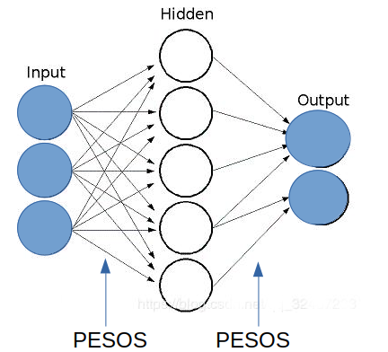

En construcción
Los reportes aquí son partes de cursos, presentaciones, etc
recopilados sin orden, y su única unidad es que me pertenecen.
Escrito en abril del 2000 es una formulación vectorial de la Red Neuronal más citada y expuesta en la literatura de Machine Learning.
Se presentan los algoritmos de retropropagación estándar y por lotes. Se explica por qué los algoritmos de optimización se estancan en excesivas iteraciones que convergen a mínimos locales muy alejados del óptimo global .